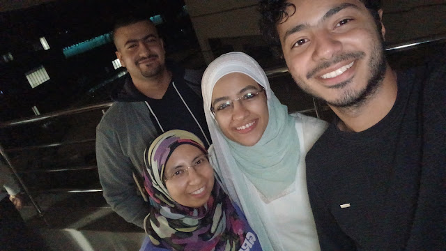

لأن الصورة ليست مجرد حفظ لهيئة أو شكل، بل انتزاعاً للحظةٍ من قبضة الزمن الذي لا يترك لشكلٍ ولا لهيئةٍ حقا في الديمومة، ولأن الصورة تقتبس بعضا من حرارة اللحظة التي التقطتها غير مكتفيةٍ بالتقاط حالة الناس فيها، بل تزيد بأن تلتقط شهود الجوامد على تلك الحالة...
أعلنُ تلك الصورة صورتي المفضلة بين كل الصور التي اخترتُ أو أُجبرتُ على الظهور فيها. فتلك الصورةُ- بالنسبة لي على الأقل- شاهدةٌ على أنًّ من كانوا في تلك الغرفة في تلك الساعة قد انتزعوا لحظة من الفرح الصادق.
